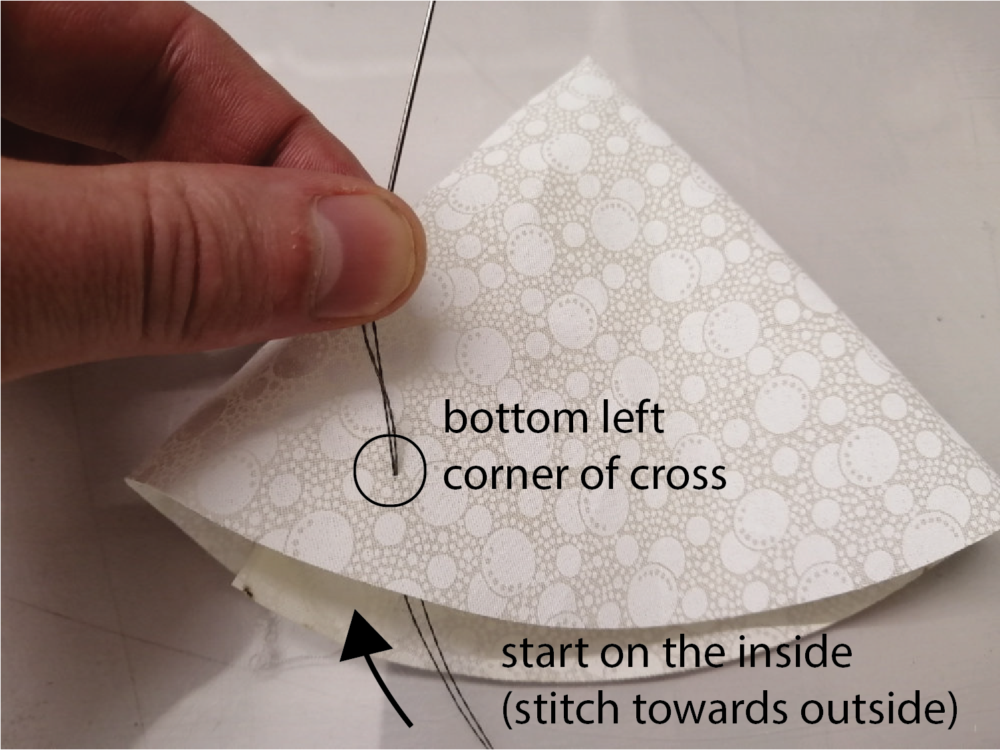
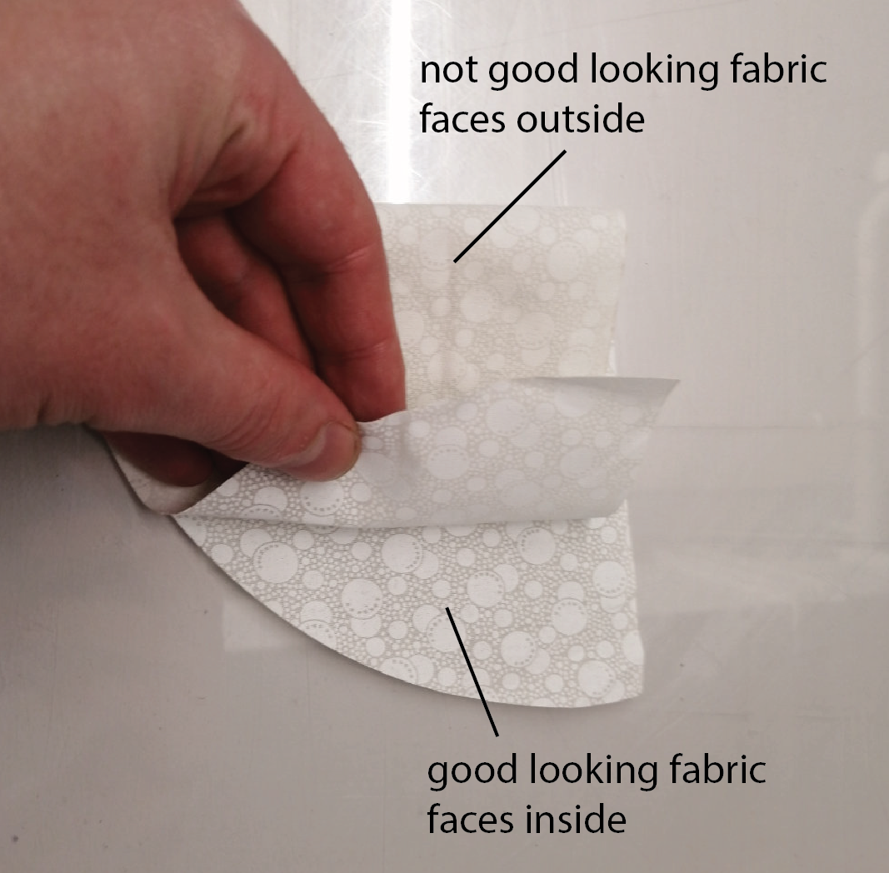
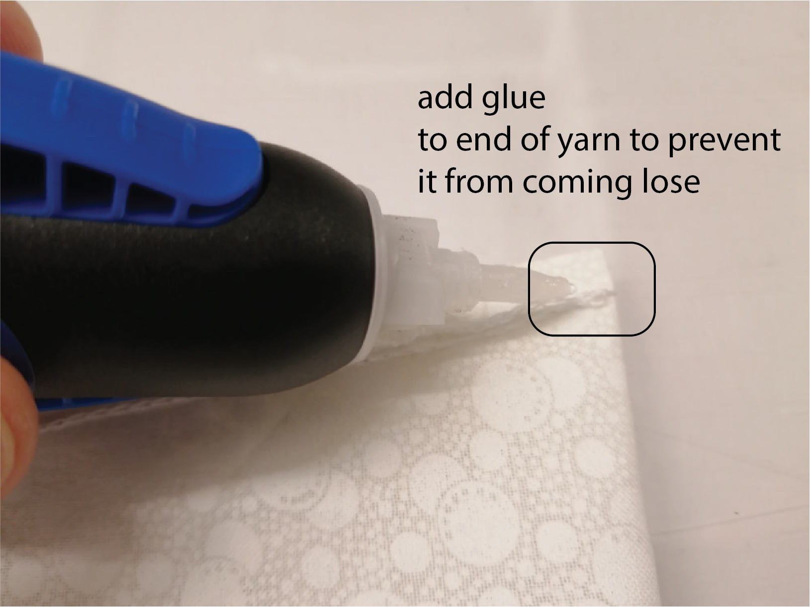
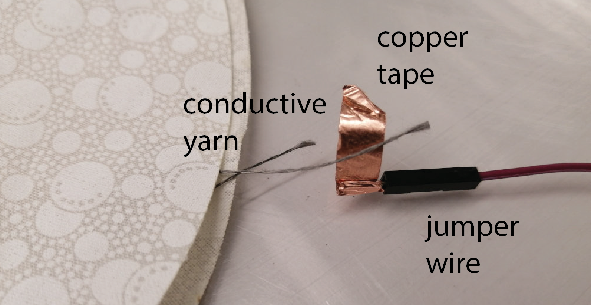
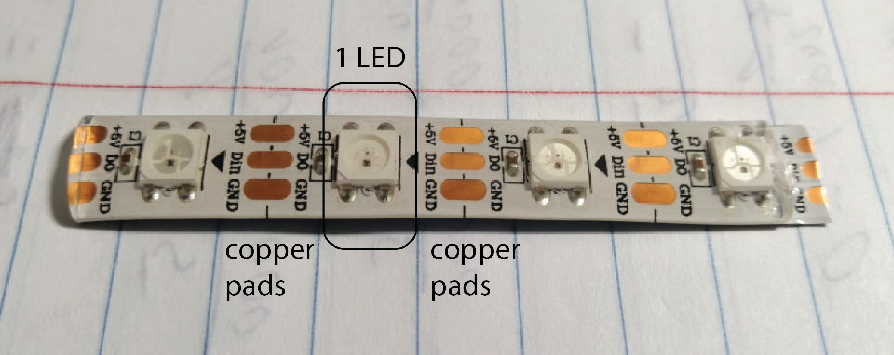

6.810 Engineering Interactive Technologies (fall 2021)
Lab 11: Creating the Lamp Shade with Conductive Yarn
In this lab, you will use fabric to make a lamp shade for your 3D printed lamp. After preparing the main fabric, you will sew on touch buttons using conductive yarn. After this, you will mount LEDs into the base of the lamp. In the next lab, we will then write code to light up the lamp in different colors depending on which touch sensor on the lamp shade it touched and also use one touch sensor to turn the lamp on/off.
 

Steps:
- Laser Cut the Fabric Cover for the Lamp Shade
- Sew Fabric Lamp Shade Cover Together
- Embroider Touch Sensors with Conductive Yarn
- Connect Touch Buttons to Jumper Wires
- Connect LEDs to Lamp Shade
Deliverables
At the end of the lab, upload to your student google drive:
- your laser cut drawing (.pdf)
- 2-3 photos (.jpg or .png) of your assembled lamp showing the stitched touch buttons and integrated LED strip
Help us Improve Class Materials for Lab11:
Please let us know if you had any trouble with the fabrication and assembly or if anything was confusing in the write up.
You can add your comments here.
(1) Laser Cut the Fabric Cover for the Lamp Shade
First, you will create the fabric cover that will go onto the 3D printed cone of the lamp shade. To create the fabric cover, you will first laser cut the desired shape and then sew it together.
make the circle larger so there is a bit more room
Draw Fabric Cover Shape for Laser Cutting: Create a new file in Adobe Illustrator for the laser cut drawing. The lamp shade will be laser cut in the shape of a half circle with a radius of 12.3cm. The easiest way to draw a half circle is to first draw a full circle in Illustrator (width/height: 24.6cm) and then delete half of the circle with the 'white mousepointer' tool, which allows you to select individual parts of the circle path. Finally, to close the half circle, draw a straight line from one end to the other.
Set Laser Cut Settings for your Drawing: Make sure you are using the correct drawing settings for laser cutting (line color: full red (R:255, G:0, B:0), and line thickness: 0.0001mm).
Laser Cut Fabric: Once you are done making the drawing, export it as a .pdf and you are ready for laser cutting. We already cut out the fabric patches in a size of 30cmx20cm, which will fit your drawing. Laser cut your half circle out of this patch (it does not matter which side of the fabric faces up in the laser cutter). When cutting, set the speed to 100% and the power to 35%.

(2) Sew Fabric Lamp Shade Cover Together
In the next step, we will fold and then sew together the laser cut piece of fabric.
Fold Fabric, Nice Side Should Face Inside: Next, you need to fold your half circle fabric over in the middle. Before you fold it, look at the fabric. You will notice that it has a good looking side with the pattern well visible and a less good looking side. After folding, the good looking side should be facing inwards and the not good looking side should be facing outwards (yes, this is correct). The reason we are doing this is that sewing is always done on the inside of the final object, so later on we will flip the fabric cover over and the good looking side will be visible outside.


Sew Together Straight Open Edge: Next, sew together the straight edge of the half circle that is not yet connected. Take one of our mobile sewing machines and sew together the open straight line. To do this, insert the fabric into the sewing machine and then draw the sewing machine in one straight motion over the edge as shown below. You can start a little bit towards the inside to make the cone more tightly fit on the lamp shade. When you reach the end of the edge, keep the sewing machine running for another 5-10 seconds. This will add a few more knots to the yarn which will ensure that the yarn does not open up directly when you pull on it accidentally. Carefully disconnect the sewing machine without untanging the knots you just made.

Glue Yarn to Fix End Point: Use glue to fix the yarn at the endpoint, so that the thread does not come apart when you handle the lamp shade in the next steps. Wait for the glue to dry.
Flip Over Fabric Cover: Once the glue has dried, flip over your fabric so that the good looking side now faces outside. Place it onto your 3D printed lamp shade to see if it fits.

(3) Embroider Touch Sensors with Conductive Yarn
Now that you have the basic fabric cover, you are ready to add the touch buttons onto the lamp shade using conductive yarn. We will add 4 touch buttons to the fabric lamp shade. One of the touch buttons will later be used to turn the lamp on and off, and the other three touch buttons will be used to set 3 different color schemes for the lamp (e.g. Red, Green, and Blue).
Insert Conductive Yarn into Needle: Take a needle and a roll of conductive yarn. Thread the conductive yarn into the needle. Make a double knot at the end of the yarn to make sure that it will hold onto the fabric and doesn't go through it.

Placement of Buttons: Before stitching the buttons, decide where you want to place them. In our example, we put the three R, G, B light color buttons on one side of the lamp and the on/off button on the other side of the lamp. You need to leave at least 2cm between adjacent touch buttons otherwise there will be cross talk among the wires of the buttons.

Stitch Touch Buttons as Cross Patterns and Glue Ends to Lampshade: Start with the first button and stitch a cross pattern into the fabric. Below you see the cross stitch step-by-step. When you finished the cross-stitch of your touch button, cut off the yarn (do not cut if off to short, leave at least 5cm yarn). Use glue to secure the end of the yarn in place. Then continue with the next touch button. Each touch button should use its own yarn (i.e. wire). They should not be connected together with the same yarn since we otherwise would not be able to sense which button is touched. When you start the next touch button, make sure to leave at least 2cm distance to the previous touch button so there is no cross talk among the wires of the buttons.


(4) Connect Touch Buttons to Jumper Wires
Since we can't stick the conductive yarn into a breadboard, we will connect it to a jumper wire and then use the jumper wire for breadboarding.
Wrap Copper Tape Around Jumper Wire: Get a jumper wire. Cut off a piece of conductive copper tape. First, wrap the beginning of the copper tape around the jumper wire. Before closing off the tape, also include the conductive yarn so everything is connected together.


Repeat for All Conductive Yarns: Repeat these steps for all 4 conductive yarns connected to our touch buttons. At the end of this step, you should have four jumper wires connected ready for breadboarding.


Place Fabric Cover on 3D printed Lamp & Glue Wires onto Arms of Lamp Shade: You are now ready to place the fabric over the 3D printed lamp shade. Make sure that the conductive yarns inside the lamp shade do not touch each other. You can ensure this by glueing each jumper wire to one of the arms of the lamp shade to spread them out.


(5) Connect LEDs to Lamp Shade
Next, you will connect the LEDs to your lamp shade. For the LEDs, we will use Neopixel LEDs, which are RGB LEDs that can be addressed individually and thus each LED on the strip can take on any color you like.
Cut Off a Stripe of LEDs: The Neopixel LEDs come on a large roll. As you can see in the image below, between each LED there are 3 copper pads. You need to cut off a strip of 4 LEDs while making sure you cut the copper pads right in the middle at the end of your strip, so the next person still has enough copper pads on their LEDs to be able to solder on a wire.

Remove Silicone from End of LED Strip: There is a silicone film that covers the LED strip. The silicone film is used to protect the LED strip from water and other environmental influences but prevents us from soldering onto the copper pads. We only need to solder at the end of the LED strip, but which end should we use? Look at your LED strip. There are arrows on it. Remove the silicone film from the top of the LED strip where it covers the copper pads from which the arrows point away from.

Solder Jumper Wires onto Copper Pads: To control the LEDs colors, we need some wires that go to the copper pads. Note that the Neopixel LED strip is setup so that you only have to connect to the copper pads of a single LED in order to be able to set the color of each individual LED on the entire strip (more on this later). Thus, you only need to solder three jumper wires to the end of the strip where you just removed the silicone. For soldering, first put a solder drop on each pad and then press the tip of the jumper wire on the drop with the solder iron.

Attach the LEDs onto the Lamp Shade: Remove the blue foil from back of the LED stripes. Underneath the blue foil, there is double sided tape on the back of the LED strip. With the double sided tape exposed, you can now attach the LEDs to one of the free arms inside the printed lamp shade (i.e., an arm that does not have a jumper wire connected to a touch button).

Deliverables
At the end of the lab, upload to your student google drive:
- your laser cut drawing (.pdf)
- 2-3 photos (.jpg or .png) of your assembled lamp showing the stitched touch buttons and integrated LED strip
Please let us know if you had any trouble with the fabrication and assembly or if anything was confusing in the write up.
You can add your comments here.